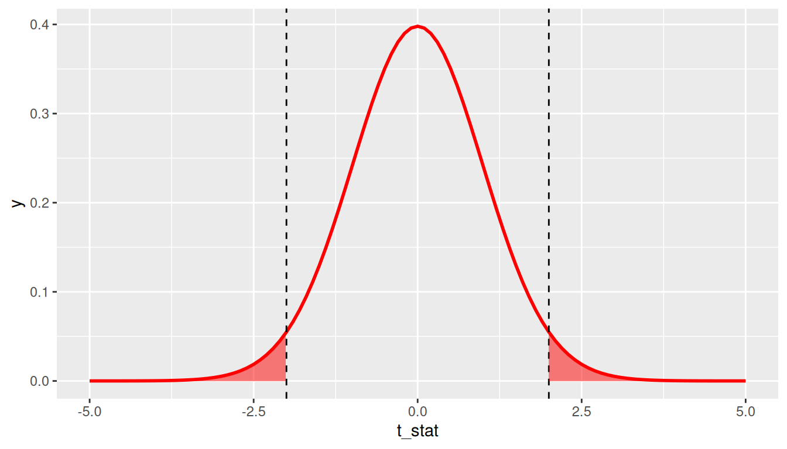

library(tidyverse)
library(moderndive)
library(infer)
library(ggplot2movies)11 P-values
In Chapter 10, we covered how to construct and interpret confidence intervals, which use the theory of repeated samples to make inferences from a sample (your data) to a population. To do so, we used counterfactual thinking that underpins statistical reasoning, wherein making inferences requires you to imagine alternative versions of your data that you might have under other possible samples selected in the same way. In this chapter, we extend this counterfactual reasoning to imagine other possible samples you might have seen if you knew the trend in the population. This way of thinking will lead us to define p-values.
Packages Needed
Let’s load all the packages needed for this chapter (this assumes you’ve already installed them). If needed, read Section 1.3 for information on how to install and load R packages.
11.1 Stochastic Proof by Contradiction
In many scientific pursuits, the goal is not simply to estimate a population parameter. Instead, the goal is often to understand if there is a difference between two groups in the population or if there is a relationship between two (or more) variables in the population. For example, we might want to know if average SAT scores differ between men and women, or if there is a relationship between education and income in the population in the United States.
Let’s take the difference in means between two groups as a motivating example. In order to prove that there is a difference between average SAT scores for men and women, we might proceed with what is in math called a proof by contradiction. Here, however, this proof is probabilistic (aka stochastic).
Stochastic Proof by Contradiction:
There are three steps in a Proof by Contradiction. In order to illustrate these, assume we wish to prove that there is a relationship between X and Y.
- Negate the conclusion: Begin by assuming the opposite – that there is no relationship between X and Y.
- Analyze the consequences of this premise: If there is no relationship between X and Y in the population, what would the sampling distribution of the estimate of the relationship between X and Y look like?
- Look for a contradiction: Compare the relationship between X and Y observed in your sample to this sampling distribution. How (un)likely is this observed relationship?
If likelihood of the observed relationship is small (given your assumption of no relationship), then this is evidence that there is in fact a relationship between X and Y in the population.
11.2 Repeated samples, the null hypothesis, and p-values
11.2.1 Null hypothesis
In the example of asking if there is a difference in SAT scores between men and women, you will note that in order to prove that there is a difference, we begin by assuming that there is not a difference (Step 1). We call this the null hypothesis – it is the hypothesis we are attempting to disprove. The most common null hypotheses are:
- A parameter is 0 in the population (e.g. some treatment effect \(\theta = 0\))
- There is no difference between two or more groups in the population (e.g. \(\mu_1 - \mu_2 = 0\))
- There is no relationship between two variables in the population (e.g. \(\beta_1\))
- The population parameter is equal to some norm known or assumed by previous data or literature (e.g. \(\pi = 0.5\) or \(\mu = \mu_{norm}\))
Importantly, this hypothesis is about the value or relationship in the population, not the sample. (This is a very easy mistake to make). Remember, you have data in your sample, so you know without a doubt if there is a difference or relationship in your data (that is your estimate). What you do not know is if there is a difference or relationship in the population. Once a null hypothesis is determined, the next step is to determine what the sampling distribution of the estimator would be if this null hypothesis were true (Step 2). We can determine what this null distribution would look like, just as we’ve done with sampling distributions more generally: using mathematical theory and formulas for known distributions.
11.2.2 P-values
Once the distribution of the sample statistic under the null hypothesis is determined, to complete the stochastic proof by contradiction, you simply need to ask: Given this distribution, how likely is it that I would have drawn a random sample in which the estimated value is this extreme or more extreme?
This is the p-value: The probability of your observing an estimate as extreme as the one you observed if the null hypothesis is true. If this p-value is small, it means that this data is unlikely to occur under the null hypothesis, and thus the null hypothesis is unlikely to be true. (See, proof by contradiction!)
In general, in order to estimate a p-value, you first need to standardize your sample statistic. This standardization makes it easier to determine the sampling distribution under the null hypothesis.
Standardization is conducted using the following formula:
\[t\_stat = \frac{Estimate - Null \ \ value}{SE(Estimate)}\]
Note this is just a special case of the previous standardization formula we’ve seen before, where here we’re plugging in the “null value” for the mean of the estimate. The null value refers to the value of the population parameter assumed by the null hypothesis. As we mentioned, in many cases the null value is zero. That is, we begin the proof by contradiction by assuming there is no relationship, no differences between groups, etc. in the population.
This standardized statistic \(t\_stat\) is then used to determine the sampling distribution under the null hypothesis and the p-value based upon the observed value.
11.3 P-value and Null Distribution Example
11.3.1 IMDB data
The movies dataset in the ggplot2movies package contains information on 58,788 movies that have been rated by users of IMDB.com.
movies# A tibble: 58,788 × 24
title year length budget rating votes r1 r2 r3 r4 r5 r6
<chr> <int> <int> <int> <dbl> <int> <dbl> <dbl> <dbl> <dbl> <dbl> <dbl>
1 $ 1971 121 NA 6.4 348 4.5 4.5 4.5 4.5 14.5 24.5
2 $1000 a… 1939 71 NA 6 20 0 14.5 4.5 24.5 14.5 14.5
3 $21 a D… 1941 7 NA 8.2 5 0 0 0 0 0 24.5
4 $40,000 1996 70 NA 8.2 6 14.5 0 0 0 0 0
5 $50,000… 1975 71 NA 3.4 17 24.5 4.5 0 14.5 14.5 4.5
6 $pent 2000 91 NA 4.3 45 4.5 4.5 4.5 14.5 14.5 14.5
7 $windle 2002 93 NA 5.3 200 4.5 0 4.5 4.5 24.5 24.5
8 '15' 2002 25 NA 6.7 24 4.5 4.5 4.5 4.5 4.5 14.5
9 '38 1987 97 NA 6.6 18 4.5 4.5 4.5 0 0 0
10 '49-'17 1917 61 NA 6 51 4.5 0 4.5 4.5 4.5 44.5
# ℹ 58,778 more rows
# ℹ 12 more variables: r7 <dbl>, r8 <dbl>, r9 <dbl>, r10 <dbl>, mpaa <chr>,
# Action <int>, Animation <int>, Comedy <int>, Drama <int>,
# Documentary <int>, Romance <int>, Short <int>We’ll focus on a random sample of 68 movies that are classified as either “action” or “romance” movies but not both. We disregard movies that are classified as both so that we can assign all 68 movies into either category. Furthermore, since the original movies dataset was a little messy, we provided a pre-wrangled version of our data in the movies_sample data frame included in the moderndive package (you can look at the code to do this data wrangling here):
movies_sample# A tibble: 68 × 4
title year rating genre
<chr> <int> <dbl> <chr>
1 Underworld 1985 3.1 Action
2 Love Affair 1932 6.3 Romance
3 Junglee 1961 6.8 Romance
4 Eversmile, New Jersey 1989 5 Romance
5 Search and Destroy 1979 4 Action
6 Secreto de Romelia, El 1988 4.9 Romance
7 Amants du Pont-Neuf, Les 1991 7.4 Romance
8 Illicit Dreams 1995 3.5 Action
9 Kabhi Kabhie 1976 7.7 Romance
10 Electric Horseman, The 1979 5.8 Romance
# ℹ 58 more rowsThe variables include the title and year the movie was filmed. Furthermore, we have a numerical variable rating, which is the IMDB rating out of 10 stars, and a binary categorical variable genre indicating if the movie was an Action or Romance movie. We are interested in whether there is a difference in average ratings between the Action and Romance genres.
That is, our parameter of interest is \(\mu_1 - \mu_2\), which we estimate by \(\bar{x}_1 - \bar{x}_2\).
We start by assuming there is no difference, therefore our null value is \(\mu_1 - \mu_2 = 0\). We want to calculate \(t\_stat\) for this scenario:
\[t\_stat = \frac{Estimate - Null \ \ value}{SE(Estimate)} = \frac{(\bar{x}_1 - \bar{x}_2) - 0}{\sqrt{\frac{s_1^2}{n_1} + \frac{s_2^2}{n_2}}}\]
Let’s compute all the necessary values from our sample data. We need: the number of movies (n), the mean rating (xbar), and the standard deviation (s) split by the binary variable genre. We’ll also calculate \(\frac{s_i^2}{n_i}\) for each group (var_xbar), which is needed to calculate the denominator of \(t\_stat\).
genre_mean_stats <- movies_sample %>%
group_by(genre) %>%
summarize(n = n(),
xbar = mean(rating),
s = sd(rating),
var_xbar = s^2/n)
genre_mean_stats# A tibble: 2 × 5
genre n xbar s var_xbar
<chr> <int> <dbl> <dbl> <dbl>
1 Action 32 5.28 1.36 0.0579
2 Romance 36 6.32 1.61 0.0720So we have 36 movies with an average rating of 6.32 stars out of 10 and 32 movies with a sample mean rating of 5.28 stars out of 10. The difference in these average ratings is thus 6.32 - 5.28 = 1.05. And the standard error of this difference is 0.36. Our resulting t_stat is 2.906.
genre_mean_stats %>%
summarize(diff_in_means = diff(xbar),
SE_diff = sqrt(sum(var_xbar)),
t_stat = diff_in_means / SE_diff) # A tibble: 1 × 3
diff_in_means SE_diff t_stat
<dbl> <dbl> <dbl>
1 1.05 0.360 2.91There appears to be an edge of 1.05 stars in romance movie ratings. The question is however, are these results indicative of a true difference for all romance and action movies? Or could this difference be attributable to chance and sampling variation? Computing a p-value for this t-statistic can help us to answer this.
11.3.2 p-values using formulas
Recall from Chapter 10 that even though the sampling distribution of many estimators are normally distributed, the standardized statistic \(t\_stat\) computed above often follows a \(t(df)\) distribution because the formula for the standard error of many estimators involves an additional estimated quantity, \(s^2\), when the population variance is unknown. Recall that (differences in) proportions still follow the \(N(0,1)\) distribution because they do not require \(s^2\) to be estimated. An abbreviated version of Table 10.1 with the relevant degrees of freedom for the t-distribution is given below:
| Statistics | Population parameter | Estimator | t-distribution df |
|---|---|---|---|
| Mean | \(\mu\) | \(\bar{x}\) | \(n – 1\) |
| Difference in means | \(\mu_1 -\mu_2\) | \(\bar{x}_1 - \bar{x}_2\) | \(\approx min(n_1 -1, n_2 – 1)^*\) |
| Regression intercept | \(\beta_0\) | \(b_0\) | \(n - k - 1\) |
| Regression slope | \(\beta_1\) | \(b_1\) | \(n - k - 1\) |
Note that for difference in means, the exact degrees of freedom formula is much more complicated. We use \(min(n_1 -1, n_2 – 1)\) as a conservative approximation when doing computations manually. For the regression parameters, \(k\) is equal to the number of predictors in the model. So for a model with one predictor, \(k = 1\) and the degrees of freedom would be \(n - 1 - 1 = n - 2\).
Caveat: It is important to note that the t-distribution is often referred to as a “small sample” distribution. That is because once the degrees of freedom are large enough (when the sample size is large), the t-distribution is actually quite similar to the normal distribution as we have seen previously. For analysis purposes, however, you don’t need to determine when to use one or the other as your sampling distribution: unless dealing with proportions, you can always use the t-distribution instead of the Normal distribution.
We can calculate a p-value by asking: Assuming the null distribution, what is the probability that we will see a \(t\_stat\) value as extreme as the one from our data? Typically, we want to calculate what is called a “two-sided” p-value, which calculates the probability that you would observe a \(t\_stat\) value as extreme as the one observed in either direction. That is, we are interested in values of \(t\_stat\) that are as large in magnitude as the one we observed, in both the positive and negative directions. For example, if we observe a \(t\_stat\) value of 2.0, the appropriate two-sided p-value is represented by the probability shaded in Figure 11.2.

We can calculate this probability using the pt()function in R, where we plug in the appropriate degrees of freedom and our t_stat value as the quantile. Remember there is a default argument lower.tail = TRUE in the pt() function, which means it returns the probability to the left of the t_stat value you enter. Because the t-distribution is symmetric, you can simply multiply the probability in the lower tail by two to get the probability of falling in either tail. The p-value implied by Figure 11.2 would therefore be calculated by 2*pt(-2, df = 99). Note that in general if you have positive t_stat value, you will want to either use 2*pt(-t_stat, 99) or 2*pt(t_stat, 99, lower.tail = FALSE). A general form that will always work regardless of the sign of t_stat is to use 2*pt(-abs(t_stat), 99), where abs() is the absolute value function.
In our IMDB movies example, we observe t_stat = 2.91, and we want to know what the probability of observing a \(t\_stat\) value as large in magnitude as this would be under the null distribution. Note our approximate \(df = min(n_1 - 1, n_2 - 1) = min(36 - 1, 32 - 1) = 31\), so our p-value is given by 2*pt(-2.91, 31) = 0.007. This tells us that if the null distribution is true (i.e. if there is no true difference between average ratings of romance and action movies on IMDB), we would only observe a difference as large as we did 0.7% of the time. This provides evidence - via proof by contradiction - that the null distribution is likely false; that is, there is likely a true difference in average ratings of romance and action movies on IMDB.
11.3.3 p-values using t.test
There is a convenient function in R called t.test that will conduct the above calculations for you, including \(t\_stat\) and its \(p-value\). For a difference in means like the IMDB example, t.test requires two arguments x and y that are numeric vectors of data values for each group you are comparing. In this example, x would be the ratings for romance movies and y would be the ratings for action movies. We can create these two vectors by using filter() on our movies_sample data.
romance <- movies_sample %>%
filter(genre == "Romance")
action <- movies_sample %>%
filter(genre == "Action")
movies_t.test <- t.test(x = romance$rating, y = action$rating)
movies_t.test
Welch Two Sample t-test
data: romance$rating and action$rating
t = 3, df = 66, p-value = 0.005
alternative hypothesis: true difference in means is not equal to 0
95 percent confidence interval:
0.328 1.767
sample estimates:
mean of x mean of y
6.32 5.28 We see that t.test returns the same values for \(\bar{x}_1 = 6.32\) and \(\bar{x}_2 = 5.28\) that we saw before. The output shows a rounded value for \(t\_stat\) as \(t = 3\), but we can access the unrounded value using movies_t.test$statistic and find that it gives the same value \(t\_stat = 2.91\).
movies_t.test$statistic t
2.91 Note the degrees of freedom in movies_t.test are different due to the fact that t.test is able to use the more complicated exact formula for degrees of freedom, whereas we used the conservative approximate formula \(df = min(n_1 - 1, n_2 - 1)\). Using t.test gives a p-value of 0.005, which is similar to the value we computed using formulas above 0.007. Again, the p-values here will not match exactly due to the different degrees of freedom.
11.3.4 p-values using regression
We can also use a regression model to estimate the difference between means. We can fit the model \[\widehat{rating} = b_0 + b_1*genre,\] where action is the reference category (because it comes before romance in alphabetical order). Recalling what we learned in Section 5.2, \(b_0\) is interpreted as the average rating for action movies, and \(b_1\) is the offset in average rating for romance movies, relative to action movies. That is, \(b_1 = \bar{x}_{romance} - \bar{x}_{action}\), which is exactly the estimate we’re interested in. Let’s fit this model and take a look at its summary output.
movies_model <- lm(rating ~ genre, data = movies_sample)
summary(movies_model)
Call:
lm(formula = rating ~ genre, data = movies_sample)
Residuals:
Min 1Q Median 3Q Max
-4.022 -1.135 0.101 1.078 3.278
Coefficients:
Estimate Std. Error t value Pr(>|t|)
(Intercept) 5.275 0.265 19.92 <0.0000000000000002 ***
genreRomance 1.047 0.364 2.88 0.0054 **
---
Signif. codes: 0 '***' 0.001 '**' 0.01 '*' 0.05 '.' 0.1 ' ' 1
Residual standard error: 1.5 on 66 degrees of freedom
Multiple R-squared: 0.111, Adjusted R-squared: 0.098
F-statistic: 8.28 on 1 and 66 DF, p-value: 0.0054The coefficient for \(b_1\) (labeled genreRomance) does in fact give the estimate of the difference in means that we’ve seen already. Note that you now know how to interpret the other three columns in the regression output: Std. Error gives the standard error of the estimate in the corresponding row, t-value gives the \(t\_stat\) value for the standardized estimate, and Pr(>|t|) gives the two-sided p-value for the corresponding \(t\_stat\).
One important caveat is that when using the regression framework to estimate the difference between means, the regression model imposes an additional assumption on the data: that the variances are equal in both groups. The usual standard error formula for a difference in means is \(\sqrt{\frac{s_1^2}{n_1} + \frac{s_2^2}{n_2}}\), which allows there to be different variances in each group (i.e. \(s_1^2\) and \(s_2^2\) don’t have to be equal). A regression model assumes they are equal, however, and only estimates one variance component that is pooled across all the data points. Doing so increases the degrees of freedom to \(df = n - 2\). You should always be careful to consider whether or not equal variances is a reasonable assumption. In general, an equal variance assumption is usually valid when random assignment has been used to assign the two groups being compared. In the movies example, genres were not randomly assigned, but \(s_1\) and \(s_2\) were similar (1.36 vs. 1.61), so this is a somewhat reasonable assumption.
11.5 Interpretation of p-values
Like many statistical concepts, p-values are often misunderstood and misinterpreted. Remember, a p-value is the probability that you would observe data as extreme as the data you do if, in fact, the null hypothesis is true. As Wikipedia notes:
- The p-value is not the probability that the null hypothesis is true, or the probability that the alternative hypothesis is false.
- The p-value is not the probability that the observed effects were produced by random chance alone.
- The p-value does not indicate the size or importance of the observed effect.
Finally, remember that the p-value is a probabilistic attempt at making a proof by contradiction. Unlike in math, this is not a definitive proof. For example, if the p-value is 0.10, this means that if the null hypothesis is true, there is a 10% chance that you would observe an effect as large as the one in your sample. Depending upon if you are a glass-half-empty or glass-half-full kind of person, this could be seen as large or small:
- “Only 10% chance is small, which is unlikely. This must mean that the null hypothesis is not true,” or
- “But we don’t know that for sure: in 10% of possible samples, this does occur just by chance. The null hypothesis could be true.”
This will be important to keep in mind as we move towards using p-values for decision making in Chapter 12.